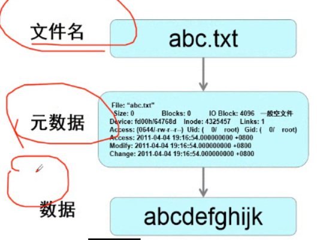
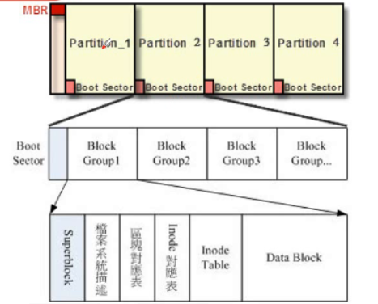
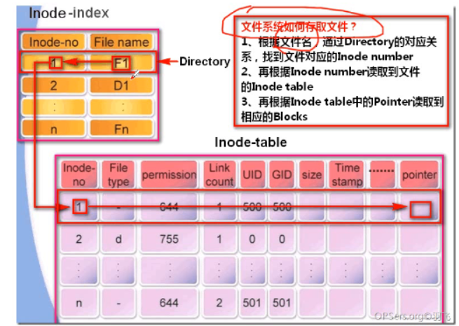
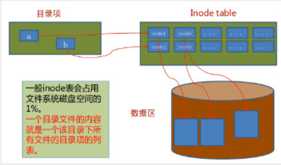
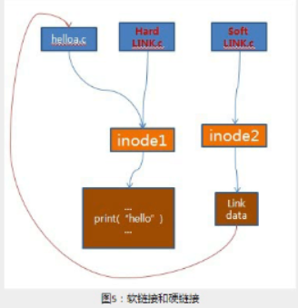

接上一篇文章，继续讲Linux文件系统
文件系统
文件系统其实是一个逻辑上的概念
文件系统是什么
管理文件和目录的一套机制（方法）
1.文件存取
2.文件的查找
3.文件的大小
4.一个目录可以存放多少个文件
5.文件的命名
6.一个分区可以多大
7.一个文件最大可以多大
8.一个分区使用了多少空间，还有多少空间没有使用
等等
文件系统的种类
- Linux下的文件系统
- XFS —》centos7
- ext4 —》centos6
- ext3 –》centos5
- iso9660 光盘
- tmpfs –》内存里划分一块空间，使用这种文件系统
- windows下的文件系统
- NTFS –》new technology file system
- FAT32 —》u盘
超过4G的文件不能存放
- 网络文件系统–》分布式、集群
- NFS —》可以共享磁盘空间给别的机器使用存放数据
- GFS –》Google file system
- TFS –》taobao file system
- linux内核采取虚拟文件系统层(VFS)
- 规定目录树上所有东西统一为如下结构
- dentry 目录项
- i-节点 index node —》悟空的办公室–》仓管系统–》货物的信息
- block –》货架–》真正的数据
- Linux下的文件系统
文件系统重要概念
目录项:包括文件名和inode节点号。
Inode：又称文件索引节点 ，是文件基本信息的存放地和数据块指针存放地。 存放文件的属性。
一个文件有一个inode，inode是磁盘里划分出来的空间。用来存放文件的属性信息（权限、用户和组、时间、大小信息、指针）。数据块：文件的具体内容存放地。真正的数据存放的地方。
一个文件只有1个inode，可以有很多block
ext4文件系统里：inode 256字节 block 4096字节Linux文件的组成
- 元数据：就是描述数据的数据
- 
查看文件信息
1
2
3
4
5
6
7
8
9
10
11
12
13
14
15
16
17#方法1
[root@localhost ~]# ll -i
总用量 8
33574979 -rw-------. 1 root root 1257 10月 11 23:28 anaconda-ks.cfg
33647857 -rw-r--r--. 1 root root 489 10月 14 19:53 nat.sh
#方法2
[root@localhost ~]# stat nat.sh
文件："nat.sh"
大小：489 块：8 IO 块：4096 普通文件
设备：fd00h/64768d Inode：33647857 硬链接：1
权限：(0644/-rw-r--r--) Uid：( 0/ root) Gid：( 0/ root)
环境：unconfined_u:object_r:admin_home_t:s0
最近访问：2019-10-14 19:53:32.581080386 +0800
最近更改：2019-10-14 19:53:32.581080386 +0800
最近改动：2019-10-14 19:53:32.583080376 +0800
创建时间：-
[root@localhost ~]#
文件系统重要参数
superblock（超级块）：记录此 file system 的整体信息，包括inode/block的总量、使用量、剩余量，以及文件系统的格式
inode：记录文件的属性，一个文件占用一个inode，同时记录此文件的数据所在的 block 号码
属性：权限、用户、组、时间、大小、文件名等block：实际记录文件的内容（真实的数据），若文件太大时，会占用多个 block
在格式化时 block已经固定，且每个block都有编号。但要注意，由于block大小不同，会导致该文件系统能够支持的最大磁盘容量与最大单一文件容量并不相同。
用的block太小，则一个文件要用多两个block，inode 记录也会增加，降低读写性能。
若block太大，文件小的时候则会使剩余空间不能用了，会浪费资源。
inode对应表：记录哪些inode使用了，哪些没有使用
block对应表：记录哪些block使用了，哪些没有使用超级块（superblock）
- 
查看文件系统的超级块信息:dumpe2fs
1
2
3
4
5
6
7
8
9
10
11
12
13
14
15
16
17
18
19
20
21
22
23
24
25
26
27
28
29
30
31
32
33
34
35
36
37
38
39
40
41
42
43
44
45
46
47
48
49
50
51
52
53
54
55
56
57
58
59
60
61
62
63
64
65
66
67
68
69[root@localhost ~]# dumpe2fs /dev/sdc5
dumpe2fs 1.42.9 (28-Dec-2013)
Filesystem volume name: <none>
Last mounted on: <not available>
Filesystem UUID: 950a267e-29c5-4d5a-9cdf-c27cc64dc62b
Filesystem magic number: 0xEF53
Filesystem revision #: 1 (dynamic)
Filesystem features: has_journal ext_attr resize_inode dir_index filetype extent 64bit flex_bg sparse_super huge_file uninit_bg dir_nlink extra_isize
Filesystem flags: signed_directory_hash
Default mount options: user_xattr acl
Filesystem state: clean
Errors behavior: Continue
Filesystem OS type: Linux
Inode count: 2560
Block count: 10240
Reserved block count: 512
Free blocks: 8715
Free inodes: 2549
First block: 1
Block size: 1024
Fragment size: 1024
Group descriptor size: 64
Reserved GDT blocks: 79
Blocks per group: 8192
Fragments per group: 8192
Inodes per group: 1280
Inode blocks per group: 160
Flex block group size: 16
Filesystem created: Fri Oct 18 22:14:01 2019
Last mount time: n/a
Last write time: Fri Oct 18 22:14:01 2019
Mount count: 0
Maximum mount count: -1
Last checked: Fri Oct 18 22:14:01 2019
Check interval: 0 (<none>)
Lifetime writes: 1190 kB
Reserved blocks uid: 0 (user root)
Reserved blocks gid: 0 (group root)
First inode: 11
Inode size: 128
Journal inode: 8
Default directory hash: half_md4
Directory Hash Seed: 859d37de-8fec-4ec3-a368-c8b4a8ce4f74
Journal backup: inode blocks
Journal features: (none)
日志大小: 1024k
Journal length: 1024
Journal sequence: 0x00000001
Journal start: 0
Group 0: (Blocks 1-8192)
Checksum 0x3333, unused inodes 1269
主 superblock at 1, Group descriptors at 2-2
保留的GDT块位于 3-81
Block bitmap at 82 (+81), Inode bitmap at 98 (+97)
Inode表位于 114-273 (+113)
6749 free blocks, 1269 free inodes, 2 directories, 1269个未使用的inodes
可用块数: 1444-8192
可用inode数: 12-1280
Group 1: (Blocks 8193-10239) [INODE_UNINIT]
Checksum 0x47e8, unused inodes 1280
备份 superblock at 8193, Group descriptors at 8194-8194
保留的GDT块位于 8195-8273
Block bitmap at 83 (bg #0 + 82), Inode bitmap at 99 (bg #0 + 98)
Inode表位于 274-433 (bg #0 + 273)
1966 free blocks, 1280 free inodes, 0 directories, 1280个未使用的inodes
可用块数: 8274-10239
可用inode数: 1281-2560
[root@localhost ~]#
文件系统如何读取文件？
I、根据文件名,通过Directory的对应关系,找到文件对应的Inode number
2、再根据Inode number读取到文件的Inode table
3.再根据Inode table中的Pointer读取到相应的Blocks

文件描述符
内核—》进程—》文件描述符
文件描述符在形式上是一个非负整数。实际上，它是一个索引值，指向内核为每一个进程所维护的该进程打开文件的记录表。当程序打开一个现有文件或者创建一个新文件时，内核向进程返回一个文件描述符。
文件描述符就是进程打开的每一个文件对应的一个编号，进程通过这个编号来找到相应的文件。
- 内核帮助进程维护一张文件描述符表：文件名 –》编号
每个进程里面都有自己独立的文件描述符,相互之间没有关系
文件描述符的有效范围是0到OPEN_MAX
内核
/boot
/
/data –》20G —>容量不够了，如何解决？linux的内核（kernel）： linux内部最核心的软件–》c语言
作用：管理硬件
1.对cpu进行调度
2.对内存进行分配管理
3.对进程进行管理
4.对文件系统进行管理 5.对其他硬件进行管理
查看内核相关参数
ulimit -a
1
2
3
4
5
6
7
8
9
10
11
12
13
14
15
16
17
18[root@PC-2 fd]# ulimit -a
core file size (blocks, -c) 0
data seg size (kbytes, -d) unlimited
scheduling priority (-e) 0
file size (blocks, -f) unlimited
pending signals (-i) 3802
max locked memory (kbytes, -l) 64
max memory size (kbytes, -m) unlimited
open files (-n) 1024 所以一个进程最多可以打开1024个文件
pipe size (512 bytes, -p) 8
POSIX message queues (bytes, -q) 819200
real-time priority (-r) 0
stack size (kbytes, -s) 8192
cpu time (seconds, -t) unlimited
max user processes (-u) 3802
virtual memory (kbytes, -v) unlimited
file locks (-x) unlimited
[root@PC-2 fd]#调大一个进程最多能打开的文件数量 ulimit -n 65535
- 相当于对内核参数进行调优
文件类型
block设备文件：存放数据的文件–》磁盘相关的
1
2
3
4
5
6[root@disk ~]# ll /dev/sde*
brw-rw----. 1 root disk 8, 64 7月 4 17:23 /dev/sde
brw-rw----. 1 root disk 8, 65 7月 4 17:23 /dev/sde1
brw-rw----. 1 root disk 8, 66 7月 4 17:23 /dev/sde2
brw-rw----. 1 root disk 8, 67 7月 4 17:23 /dev/sde3
[root@disk ~]#character 字符设备文件：与文字显示有关的设备文件
1
2
3[root@disk ~]# ll /dev/tty1
crw--w----. 1 root tty 4, 1 7月 5 09:36 /dev/tty1
[root@disk ~]#socket文件
1
2[root@disk dev]# ll /dev/log
srw-rw-rw-. 1 root root 0 7月 4 15:29 /dev/log
软链接硬链接
软链接和硬链接的区别
软链接：相当于windows里的快捷方式
软链接是有自己的目录项和inode号，block里存放的是链接文件的文件名，然后通过文件名在去找原文件的内容
- 软链接=符号文件，目录和文件都可以创建，删除源文件会导致链接文件失效
硬链接是目录项里的文件名不同，但是inode号一样，指向同一个block
软链接：删除原文件，链接文件不能访问 ，不同的目录项，不同的inode
硬链接：删除原文件，还是可以访问 :相同的inode号–》block
目录项的文件名不一样，但是inode号一样。 目录项的文件名不一样，但是inode号一样

软链接
1
2
3
4
5
6
7
8
9
10
11
12
13
14
15
16
17
18
19
20
21
22
23
24
25
26
27
28
29
30
31
32
33
34
35
36
37
38[root@disk 7_5]# ln -s nongda nd
[root@disk 7_5]# ll
总用量 0
lrwxrwxrwx. 1 root root 6 7月 5 14:51 nd -> nongda
drwxr-xr-x. 2 root root 6 7月 5 14:51 nongda
drwxr-xr-x. 6 root root 69 7月 5 10:48 sanchuang
[root@disk 7_5]# touch yx.txt
[root@disk 7_5]# ls
nd nongda sanchuang yx.txt
[root@disk 7_5]# ln -s yx.txt yinxiang.txt
[root@disk 7_5]# ll
总用量 0
lrwxrwxrwx. 1 root root 6 7月 5 14:51 nd -> nongda
drwxr-xr-x. 2 root root 6 7月 5 14:51 nongda
drwxr-xr-x. 6 root root 69 7月 5 10:48 sanchuang
lrwxrwxrwx. 1 root root 6 7月 5 14:54 yinxiang.txt -> yx.txt
-rw-r--r--. 1 root root 0 7月 5 14:54 yx.txt
[root@disk 7_5]#
[root@disk 7_5]# cd nd
[root@disk nd]# ls
cali feng.txt
[root@disk nd]# pwd
/root/7_5/nd
[root@disk nd]# pwd -P 显示真正的路径
/root/7_5/nongda
[root@disk nd]# man pwd
[root@disk nd]#
[root@localhost sanchuang]# ln -s dinglang dl
-s, --symbolic soft links 符号链接叫软链接
make symbolic links instead of hard links
[root@localhost dl]# pwd -P
/movie/sanchuang/dinglang
[root@localhost dl]#
[root@localhost dl]# ln jack/ jiezhu
ln: "jack/": 不允许将硬链接指向目录
[root@localhost dl]#
问题
1.删除一个文件删除了哪些东西？为什么数据可以恢复？
目录项和inode表里的bit map(位图表inode对应表)里的信息和block bitmap里的信息
其实真正的数据并没有删除，建议误删除数据后不要再做任何创建文件或者文件夹或者复制文件进来的操作
2.新建一个分区10M，对格式化ext4—->有多少的inode,有多少blcok?
1
2
3
4
5
6
7
8
9
10
11
12
13
14
15
16
17
18
19
20
21
22
23[root@localhost ~]# mkfs.ext4 /dev/sdc5
mke2fs 1.42.9 (28-Dec-2013)
文件系统标签=
OS type: Linux
块大小=1024 (log=0)
分块大小=1024 (log=0)
Stride=0 blocks, Stripe width=0 blocks
2560 inodes, 10240 blocks
512 blocks (5.00%) reserved for the super user
第一个数据块=1
Maximum filesystem blocks=10485760
2 block groups
8192 blocks per group, 8192 fragments per group
1280 inodes per group
Superblock backups stored on blocks:
8193
Allocating group tables: 完成
正在写入inode表: 完成
Creating journal (1024 blocks): 完成
Writing superblocks and filesystem accounting information: 完成
[root@localhost ~]#操作系统会根据我们的分区大小调节inode,和block的数量
1
2
3
4
5
6
7
8
9
10
11
12
13
14
15
16
17[root@localhost ~]# mkdir /chengweihan
[root@localhost ~]# mount /dev/sdc5 /chengweihan/
[root@localhost ~]# df -Tj
df：无效选项 -- j
Try 'df --help' for more information.
[root@localhost ~]# df -Th
文件系统 类型 容量 已用 可用 已用% 挂载点
/dev/mapper/centos-root xfs 17G 1.4G 16G 8% /
devtmpfs devtmpfs 476M 0 476M 0% /dev
tmpfs tmpfs 488M 0 488M 0% /dev/shm
tmpfs tmpfs 488M 7.7M 480M 2% /run
tmpfs tmpfs 488M 0 488M 0% /sys/fs/cgroup
/dev/sda1 xfs 1014M 130M 885M 13% /boot
tmpfs tmpfs 98M 0 98M 0% /run/user/0
/dev/sdc5 ext4 8.7M 172K 7.9M 3% /chengweihan
[root@localhost ~]# cd /chengweihan/
[root@localhost chengweihan]#将inode耗光，哪怕磁盘空间容量还够都无法再创建文件
1
2
3
4
5
6
7
8
9
10
11
12
13
14
15
16
17
18
19
20
21
22
23
24
25
26
27
28
29[root@localhost chengweihan]# vim create_file.sh
[root@localhost chengweihan]# ll -i
总用量 14
13 -rw-r--r--. 1 root root 59 10月 18 22:21 create_file.sh
11 drwx------. 2 root root 12288 10月 18 22:14 lost+found
[root@localhost chengweihan]# bash create_file.sh
touch: 无法创建"sanchuang2549": 设备上没有空间
touch: 无法创建"sanchuang2550": 设备上没有空间
touch: 无法创建"sanchuang2551": 设备上没有空间
touch: 无法创建"sanchuang2552": 设备上没有空间
touch: 无法创建"sanchuang2553": 设备上没有空间
touch: 无法创建"sanchuang2554": 设备上没有空间
touch: 无法创建"sanchuang2555": 设备上没有空间
touch: 无法创建"sanchuang2556": 设备上没有空间
touch: 无法创建"sanchuang2557": 设备上没有空间
touch: 无法创建"sanchuang2558": 设备上没有空间
touch: 无法创建"sanchuang2559": 设备上没有空间
touch: 无法创建"sanchuang2560": 设备上没有空间
[root@localhost chengweihan]# df -TH
文件系统 类型 容量 已用 可用 已用% 挂载点
/dev/mapper/centos-root xfs 19G 1.5G 17G 8% /
devtmpfs devtmpfs 499M 0 499M 0% /dev
tmpfs tmpfs 511M 0 511M 0% /dev/shm
tmpfs tmpfs 511M 8.1M 503M 2% /run
tmpfs tmpfs 511M 0 511M 0% /sys/fs/cgroup
/dev/sda1 xfs 1.1G 136M 928M 13% /boot
tmpfs tmpfs 103M 0 103M 0% /run/user/0
/dev/sdc5 ext4 9.2M 261k 8.2M 4% /chengweihan
[root@localhost chengweihan]#
删除一个大文件速度快，删除一个小文件速度快，或者是一样的？
- inode是一样的，但是大文件消耗的block多，需要大量时间把block对应表里的1要变成0，所以消耗的时间长
nginx里有个日志文件将近10G了，需要清空这个文件，但是nginx服务一直在往这个文件里写数据，不允许停止nginx服务。直接删除这个10G的文件，是否空间就释放出来了？
rm -rf nginx.log 释放不了的 >nginx.log 不能直接去删除这个文件- 文件描述符：
- 进程里打开了哪些文件，进程会给文件进行编号。
- 进程通过编号可以找到这个文件，然后再找到文件对应的block，再往块里写数据，不停的往里面消耗空间，所以rm -rf根本停不住
- 只有把服务停止了，进程挂了，操作系统会检测发现没有了对应的目录项（inode），才能释放数据
- 在不停止服务的情况下，可以使用重定向解决这个问题
- [root@localhost chengweihan]# >zhangyalong.txt
- 文件描述符：